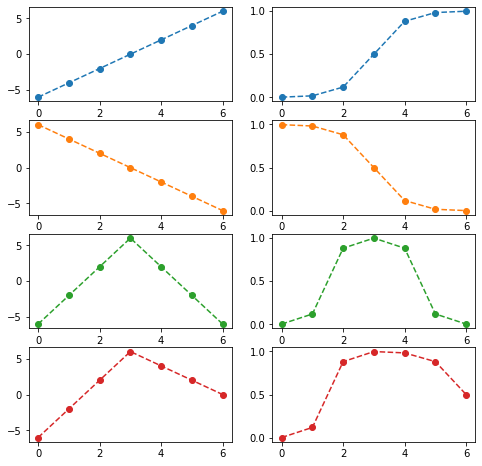
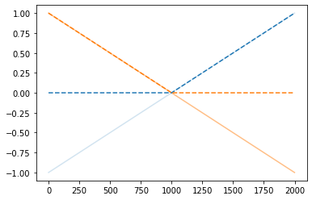
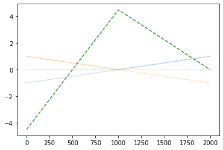
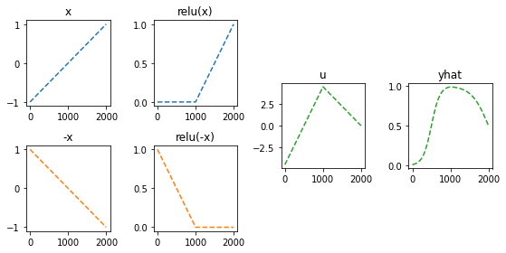
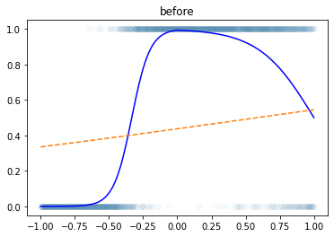
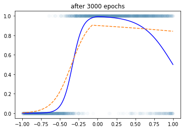
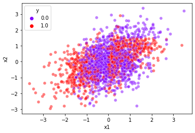
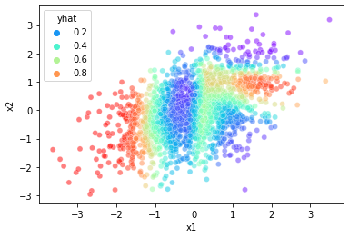
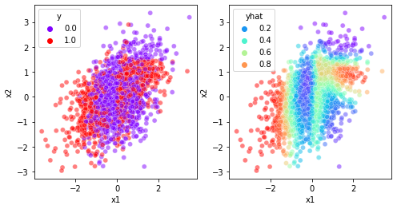

깊은신경망(1)– 로지스틱 회귀의 한계, DNN을 이용한 해결, DNN으로 해결가능한 다양한 예제
강의영상
https://youtube.com/playlist?list=PLQqh36zP38-yLHMwQLokXiLhTZefRlSXY
imports
로지스틱 회귀의 한계
신문기사 (데이터의 모티브)
중소·지방 기업 “뽑아봤자 그만두니까”
중소기업 관계자들은 고스펙 지원자를 꺼리는 이유로 높은 퇴직률을 꼽는다. 여건이 좋은 대기업으로 이직하거나 회사를 관두는 경우가 많다는 하소연이다. 고용정보원이 지난 3일 공개한 자료에 따르면 중소기업 청년취업자 가운데 49.5%가 2년 내에 회사를 그만두는 것으로 나타났다.
중소 IT업체 관계자는 “기업 입장에서 가장 뼈아픈 게 신입사원이 그만둬서 새로 뽑는 일”이라며 “명문대 나온 스펙 좋은 지원자를 뽑아놔도 1년을 채우지 않고 그만두는 사원이 대부분이라 우리도 눈을 낮춰 사람을 뽑는다”고 말했다.
가짜데이터
- 위의 기사를 모티브로 한 데이터
df=pd.read_csv('https://raw.githubusercontent.com/guebin/DL2022/main/posts/II.%20DNN/2022-10-04-dnnex0.csv')
df| x | underlying | y | |
|---|---|---|---|
| 0 | -1.000000 | 0.000045 | 0.0 |
| 1 | -0.998999 | 0.000046 | 0.0 |
| 2 | -0.997999 | 0.000047 | 0.0 |
| 3 | -0.996998 | 0.000047 | 0.0 |
| 4 | -0.995998 | 0.000048 | 0.0 |
| ... | ... | ... | ... |
| 1995 | 0.995998 | 0.505002 | 0.0 |
| 1996 | 0.996998 | 0.503752 | 0.0 |
| 1997 | 0.997999 | 0.502501 | 0.0 |
| 1998 | 0.998999 | 0.501251 | 1.0 |
| 1999 | 1.000000 | 0.500000 | 1.0 |
2000 rows × 3 columns
로지스틱 회귀로 적합
loss_fn = torch.nn.BCELoss()
loss = loss_fn(yhat,y) # loss = -torch.mean((y)*torch.log(yhat)+(1-y)*torch.log(1-yhat))
losstensor(0.8255, grad_fn=<BinaryCrossEntropyBackward0>)- Epoch을 한 6억번 넣어도 이건 못 맞출 것 같다 (증가하다가 감소하는 underlying을 설계하는 것이 불가능) \(\to\) 모형의 표현력이 너무 낮다.
해결책
- sigmoid 넣기 전의 상태가 꺽인 그래프 이어야 한다.
fig,ax = plt.subplots(4,2,figsize=(8,8))
u1 = torch.tensor([-6,-4,-2,0,2,4,6])
u2 = torch.tensor([6,4,2,0,-2,-4,-6])
u3 = torch.tensor([-6,-2,2,6,2,-2,-6])
u4 = torch.tensor([-6,-2,2,6,4,2,0])
ax[0,0].plot(u1,'--o',color='C0');ax[0,1].plot(sig(u1),'--o',color='C0')
ax[1,0].plot(u2,'--o',color='C1');ax[1,1].plot(sig(u2),'--o',color='C1')
ax[2,0].plot(u3,'--o',color='C2');ax[2,1].plot(sig(u3),'--o',color='C2')
ax[3,0].plot(u4,'--o',color='C3');ax[3,1].plot(sig(u4),'--o',color='C3')
DNN을 이용한 해결
- 목표: 아래와 같은 벡터 \({\boldsymbol u}\)를 만들어보자.
\({\boldsymbol u} = [u_1,u_2,\dots,u_{2000}], \quad u_i = \begin{cases} 9x_i +4.5& x_i <0 \\ -4.5x_i + 4.5& x_i >0 \end{cases}\)
꺽인 그래프를 만드는 방법1
꺽인 그래프를 만드는 방법2
- 전략: 선형변환 \(\to\) ReLU \(\to\) 선형변환
(예비학습) ReLU 함수란?
\(ReLU(x) = \max(0,x)\)
- 빨간색:
x, 파란색:relu(x)
예비학습끝
우리 전략 다시 확인: 선형변환1 -> 렐루 -> 선형변환2
(선형변환1)
(렐루)
plt.plot(x,alpha=0.2);plt.plot(-x,alpha=0.5)
plt.plot(relu(x),'--',color='C0');plt.plot(relu(-x),'--',color='C1')
(선형변환2)
plt.plot(x,alpha=0.2);plt.plot(-x,alpha=0.2)
plt.plot(relu(x),'--',color='C0',alpha=0.2);plt.plot(relu(-x),'--',color='C1',alpha=0.2)
plt.plot(-4.5*relu(x)-9.0*relu(-x)+4.5,'--',color='C2')
이제 초록색선에 sig를 취하기만 하면?
정리하면!
fig = plt.figure(figsize=(8, 4))
spec = fig.add_gridspec(4, 4)
ax1 = fig.add_subplot(spec[:2,0]); ax1.set_title('x'); ax1.plot(x,'--',color='C0')
ax2 = fig.add_subplot(spec[2:,0]); ax2.set_title('-x'); ax2.plot(-x,'--',color='C1')
ax3 = fig.add_subplot(spec[:2,1]); ax3.set_title('relu(x)'); ax3.plot(relu(x),'--',color='C0')
ax4 = fig.add_subplot(spec[2:,1]); ax4.set_title('relu(-x)'); ax4.plot(relu(-x),'--',color='C1')
ax5 = fig.add_subplot(spec[1:3,2]); ax5.set_title('u'); ax5.plot(-4.5*relu(x)-9*relu(-x)+4.5,'--',color='C2')
ax6 = fig.add_subplot(spec[1:3,3]); ax6.set_title('yhat'); ax6.plot(sig(-4.5*relu(x)-9*relu(-x)+4.5),'--',color='C2')
fig.tight_layout()
- 이런느낌으로 \(\hat{\boldsymbol y}\)을 만들면 된다.
torch.nn.Linear()를 이용한 꺽인 그래프 구현
(Parameter containing:
tensor([[-0.3467],
[-0.8470]], requires_grad=True),
Parameter containing:
tensor([0.3604, 0.9336], requires_grad=True),
Parameter containing:
tensor([[ 0.2880, -0.6282]], requires_grad=True),
Parameter containing:
tensor([0.2304], requires_grad=True))l1.weight.data = torch.tensor([[1.0],[-1.0]])
l1.bias.data = torch.tensor([0.0, 0.0])
l2.weight.data = torch.tensor([[ -4.5, -9.0]])
l2.bias.data= torch.tensor([4.5])
l1.weight,l1.bias,l2.weight,l2.bias(Parameter containing:
tensor([[ 1.],
[-1.]], requires_grad=True),
Parameter containing:
tensor([0., 0.], requires_grad=True),
Parameter containing:
tensor([[-4.5000, -9.0000]], requires_grad=True),
Parameter containing:
tensor([4.5000], requires_grad=True))- 수식표현
(1) \({\bf X}=\begin{bmatrix} x_1 \\ \dots \\ x_n \end{bmatrix}\)
(2) \(l_1({\bf X})={\bf X}{\bf W}^{(1)}\overset{bc}{+} {\boldsymbol b}^{(1)}=\begin{bmatrix} x_1 & -x_1 \\ x_2 & -x_2 \\ \dots & \dots \\ x_n & -x_n\end{bmatrix}\)
- \({\bf W}^{(1)}=\begin{bmatrix} 1 & -1 \end{bmatrix}\)
- \({\boldsymbol b}^{(1)}=\begin{bmatrix} 0 & 0 \end{bmatrix}\)
(3) \((a_1\circ l_1)({\bf X})=\text{relu}\big({\bf X}{\bf W}^{(1)}\overset{bc}{+}{\boldsymbol b}^{(1)}\big)=\begin{bmatrix} \text{relu}(x_1) & \text{relu}(-x_1) \\ \text{relu}(x_2) & \text{relu}(-x_2) \\ \dots & \dots \\ \text{relu}(x_n) & \text{relu}(-x_n)\end{bmatrix}\)
(4) \((l_2 \circ a_1\circ l_1)({\bf X})=\text{relu}\big({\bf X}{\bf W}^{(1)}\overset{bc}{+}{\boldsymbol b}^{(1)}\big){\bf W}^{(2)}\overset{bc}{+}b^{(2)}\)
\(\quad=\begin{bmatrix} -4.5\times\text{relu}(x_1) -9.0 \times \text{relu}(-x_1) +4.5 \\ -4.5\times\text{relu}(x_2) -9.0 \times\text{relu}(-x_2) + 4.5 \\ \dots \\ -4.5\times \text{relu}(x_n) -9.0 \times\text{relu}(-x_n)+4.5 \end{bmatrix}\)
- \({\bf W}^{(2)}=\begin{bmatrix} -4.5 \\ -9 \end{bmatrix}\)
- \(b^{(2)}=4.5\)
(5) \(net({\bf X})=(a_2 \circ l_2 \circ a_1\circ l_1)({\bf X})=\text{sig}\Big(\text{relu}\big({\bf X}{\bf W}^{(1)}\overset{bc}{+}{\boldsymbol b}^{(1)}\big){\bf W}^{(2)}\overset{bc}{+}b^{(2)}\Big)\)
\(\quad =\begin{bmatrix} \text{sig}\Big(-4.5\times\text{relu}(x_1) -9.0 \times \text{relu}(-x_1) +4.5\Big) \\ \text{sig}\Big(-4.5\times\text{relu}(x_2) -9.0 \times\text{relu}(-x_2) + 4.5 \Big)\\ \dots \\ \text{sig}\Big(-4.5\times \text{relu}(x_n) -9.0 \times\text{relu}(-x_n)+4.5 \Big)\end{bmatrix}\)
- 차원만 따지자
\(\underset{(n,1)}{\bf X} \overset{l_1}{\to} \underset{(n,2)}{\boldsymbol u^{(1)}} \overset{a_1}{\to} \underset{(n,2)}{\boldsymbol v^{(1)}} \overset{l_1}{\to} \underset{(n,1)}{\boldsymbol u^{(2)}} \overset{a_2}{\to} \underset{(n,1)}{\boldsymbol v^{(2)}}=\underset{(n,1)}{\hat{\boldsymbol y}}\)
Step1 ~ Step4
- 준비
torch.manual_seed(43052)
net = torch.nn.Sequential(
torch.nn.Linear(in_features=1,out_features=2), #u1=l1(x), x:(n,1) --> u1:(n,2)
torch.nn.ReLU(), # v1=a1(u1), u1:(n,2) --> v1:(n,2)
torch.nn.Linear(in_features=2,out_features=1), # u2=l2(v1), v1:(n,2) --> u2:(n,1)
torch.nn.Sigmoid() # v2=a2(u2), u2:(n,1) --> v2:(n,1)
) - 반복
plt.plot(x,y,'o',alpha=0.02)
plt.plot(x,df.underlying,'-b')
plt.plot(x,net(x).data,'--')
plt.title("before")Text(0.5, 1.0, 'before')
plt.plot(x,y,'o',alpha=0.02)
plt.plot(x,df.underlying,'-b')
plt.plot(x,net(x).data,'--',color='C1')
plt.title("after 3000 epochs")Text(0.5, 1.0, 'after 3000 epochs')
DNN으로 해결가능한 다양한 예제
예제1
- 언뜻 생각하면 방금 배운 기술은 sig를 취하기 전이 꺽은선인 형태만 가능할 듯 하다. \(\to\) 그래서 이 역시 표현력이 부족할 듯 하다. \(\to\) 그런데 생각보다 표현력이 풍부한 편이다. 즉 생각보다 쓸 만하다.
- 이거 시그모이드 취하기 직전은 step이 포함된 듯 \(\to\) 그래서 꺽은선으로는 표현할 수 없는 구조임 \(\to\) 그런데 사실 대충은 표현가능
- \(\underset{(n,1)}{\bf X} \overset{l_1}{\to} \underset{(n,16)}{\boldsymbol u^{(1)}} \overset{a_1}{\to} \underset{(n,16)}{\boldsymbol v^{(1)}} \overset{l_1}{\to} \underset{(n,1)}{\boldsymbol u^{(2)}} \overset{a_2}{\to} \underset{(n,1)}{\boldsymbol v^{(2)}}=\underset{(n,1)}{\hat{\boldsymbol y}}\)
예제2
- 사실 꺽은선의 조합으로 꽤 많은걸 표현할 수 있거든요? \(\to\) 심지어 곡선도 대충 맞게 적합된다.
(풀이1)
- \(\underset{(n,1)}{\bf X} \overset{l_1}{\to} \underset{(n,32)}{\boldsymbol u^{(1)}} \overset{a_1}{\to} \underset{(n,32)}{\boldsymbol v^{(1)}} \overset{l_1}{\to} \underset{(n,1)}{\boldsymbol u^{(2)}}=\underset{(n,1)}{\hat{\boldsymbol y}}\)
(풀이2) – 풀이1보다 좀 더 잘맞음. 잘 맞는 이유? 좋은초기값 (=운)
- \(\underset{(n,1)}{\bf X} \overset{l_1}{\to} \underset{(n,32)}{\boldsymbol u^{(1)}} \overset{a_1}{\to} \underset{(n,32)}{\boldsymbol v^{(1)}} \overset{l_1}{\to} \underset{(n,1)}{\boldsymbol u^{(2)}}=\underset{(n,1)}{\hat{\boldsymbol y}}\)
- 풀이1에서 에폭을 많이 반복하면 풀이2의 적합선이 나올까? –> 안나옴!! (local min에 빠졌다)
예제3
df = pd.read_csv('https://raw.githubusercontent.com/guebin/DL2022/master/posts/II.%20DNN/2022-10-04-dnnex3.csv')
df| x1 | x2 | y | |
|---|---|---|---|
| 0 | -0.874139 | 0.210035 | 0.0 |
| 1 | -1.143622 | -0.835728 | 1.0 |
| 2 | -0.383906 | -0.027954 | 0.0 |
| 3 | 2.131652 | 0.748879 | 1.0 |
| 4 | 2.411805 | 0.925588 | 1.0 |
| ... | ... | ... | ... |
| 1995 | -0.002797 | -0.040410 | 0.0 |
| 1996 | -1.003506 | 1.182736 | 0.0 |
| 1997 | 1.388121 | 0.079317 | 0.0 |
| 1998 | 0.080463 | 0.816024 | 1.0 |
| 1999 | -0.416859 | 0.067907 | 0.0 |
2000 rows × 3 columns
sns.scatterplot(data=df,x='x1',y='x2',hue='y',alpha=0.5,palette={0:(0.5, 0.0, 1.0),1:(1.0,0.0,0.0)})<AxesSubplot:xlabel='x1', ylabel='x2'>
- \(\underset{(n,2)}{\bf X} \overset{l_1}{\to} \underset{(n,32)}{\boldsymbol u^{(1)}} \overset{a_1}{\to} \underset{(n,32)}{\boldsymbol v^{(1)}} \overset{l_1}{\to} \underset{(n,1)}{\boldsymbol u^{(2)}} \overset{a_2}{\to} \underset{(n,1)}{\boldsymbol v^{(2)}}=\underset{(n,1)}{\hat{\boldsymbol y}}\)
| x1 | x2 | y | yhat | |
|---|---|---|---|---|
| 0 | -0.874139 | 0.210035 | 0.0 | 0.345833 |
| 1 | -1.143622 | -0.835728 | 1.0 | 0.605130 |
| 2 | -0.383906 | -0.027954 | 0.0 | 0.111915 |
| 3 | 2.131652 | 0.748879 | 1.0 | 0.918491 |
| 4 | 2.411805 | 0.925588 | 1.0 | 0.912608 |
| ... | ... | ... | ... | ... |
| 1995 | -0.002797 | -0.040410 | 0.0 | 0.254190 |
| 1996 | -1.003506 | 1.182736 | 0.0 | 0.508002 |
| 1997 | 1.388121 | 0.079317 | 0.0 | 0.410099 |
| 1998 | 0.080463 | 0.816024 | 1.0 | 0.262315 |
| 1999 | -0.416859 | 0.067907 | 0.0 | 0.107903 |
2000 rows × 4 columns
<AxesSubplot:xlabel='x1', ylabel='x2'>
- 결과시각화
fig, ax = plt.subplots(1,2,figsize=(8,4))
sns.scatterplot(data=df,x='x1',y='x2',hue='y',alpha=0.5,palette={0:(0.5, 0.0, 1.0),1:(1.0,0.0,0.0)},ax=ax[0])
sns.scatterplot(data=df2,x='x1',y='x2',hue='yhat',alpha=0.5,palette='rainbow',ax=ax[1])<AxesSubplot:xlabel='x1', ylabel='x2'>
- 교훈: underlying이 엄청 이상해보여도 생각보다 잘 맞춤
Appedix: 데이터 생성코드
- motivating example
- 예제1
np.random.seed(43052)
x = np.linspace(-1,1,2000).tolist()
def transfrom(x):
if x< -0.2:
return -15*x-6
elif x< 0.6:
return 9
else:
return -9
u = list(map(transfrom,x))
v = torch.nn.Sigmoid()(torch.tensor(u))
y = torch.bernoulli(v)
pd.DataFrame({'x':x, 'underlying':v,'y':y}).to_csv("2022-10-04-dnnex1.csv",index=False)- 예제2
- 예제3
np.random.seed(43052)
idx = np.linspace(-1,1,2000).tolist()
def transfrom1(x1,x2):
if x1< 0:
return -3*x1-3
elif x1< 0.6:
return 0
elif x2>1.5:
return -0.5*(x1)**2-10*x2+5
else:
return x1+2*x2-2
u = torch.tensor(list(map(transfrom1,x1,x2)))
v = torch.nn.Sigmoid()(u)
y = torch.bernoulli(v)
pd.DataFrame({'x1':x1, 'x2':x2, 'y':y}).to_csv("2022-10-04-dnnex3.csv",index=False)